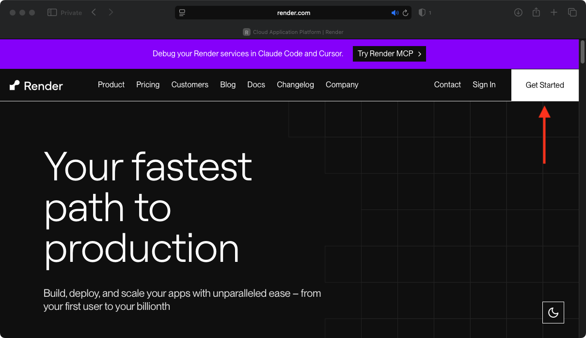
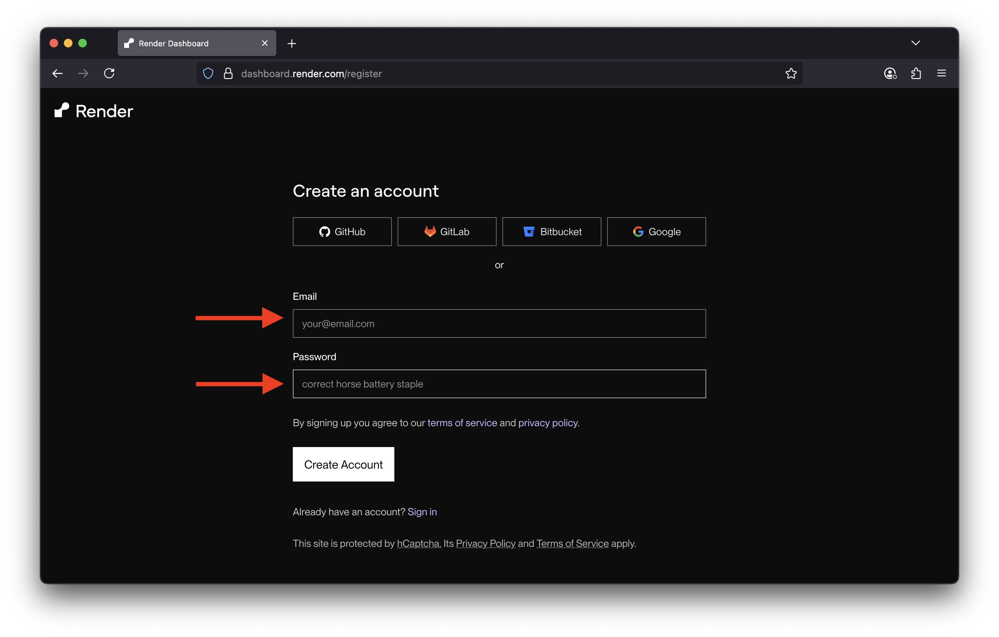
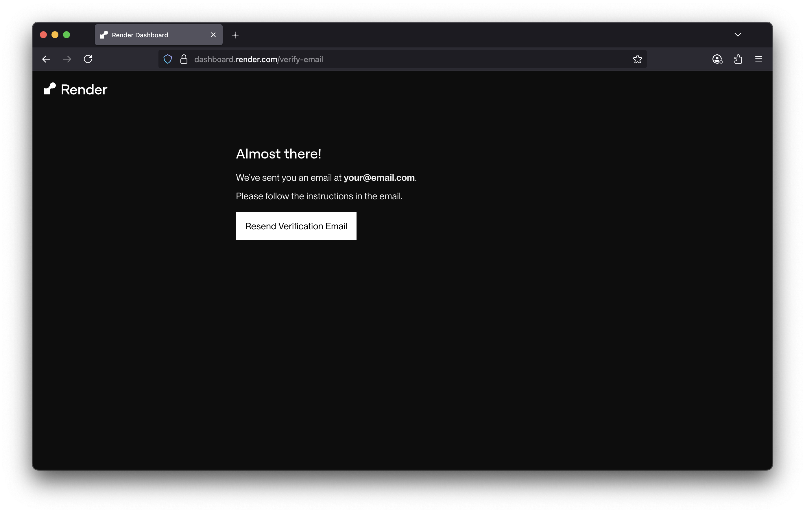
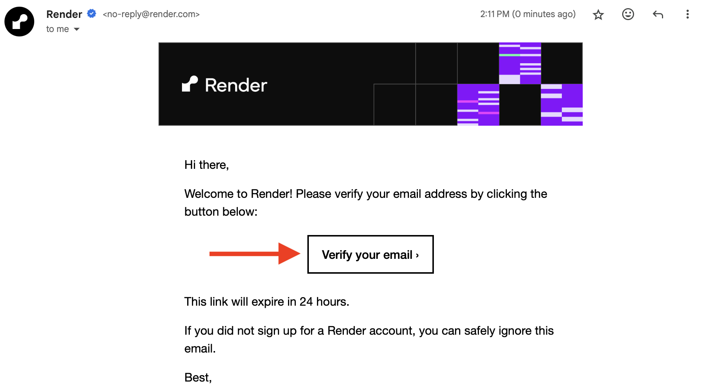
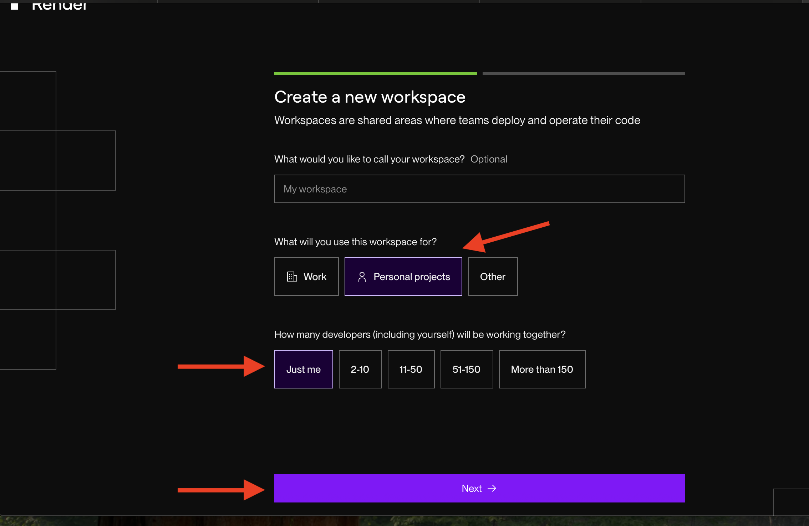
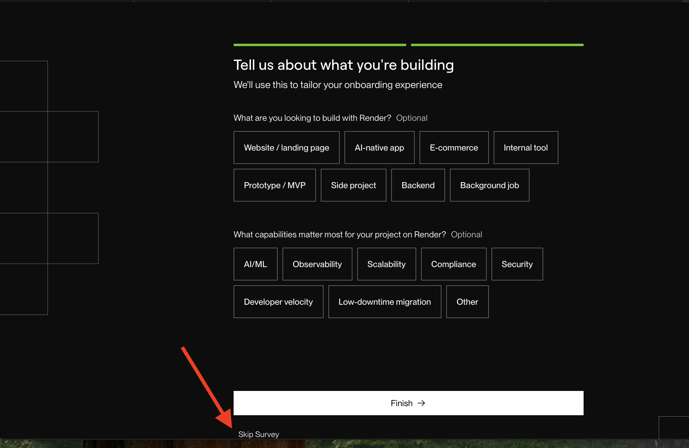
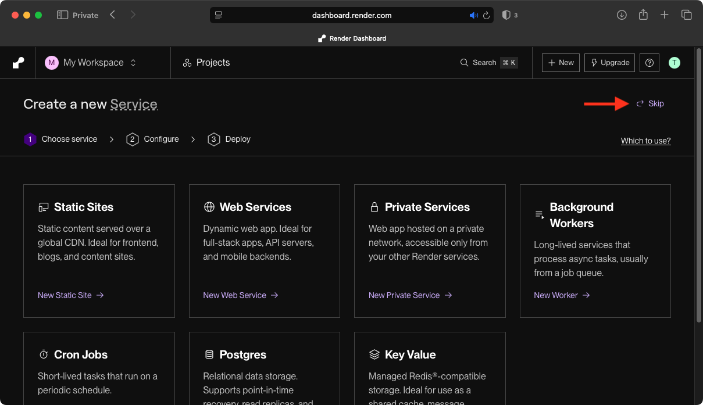
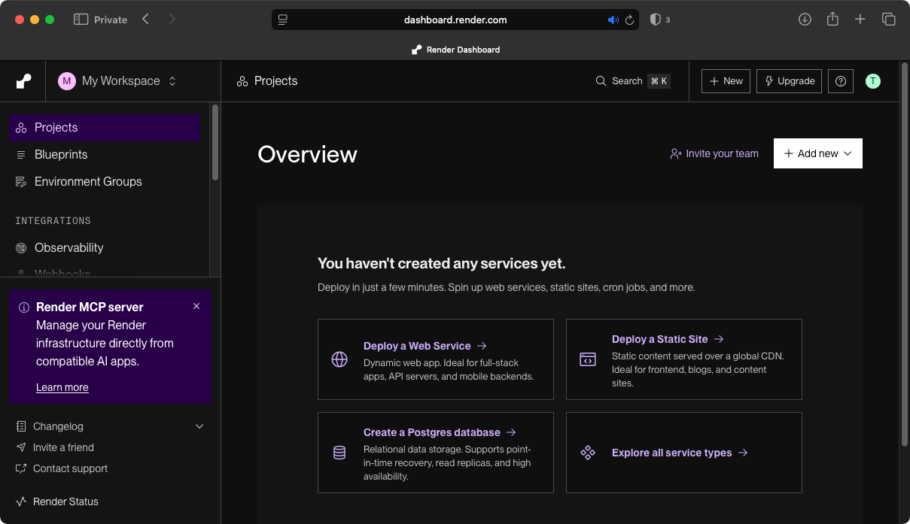

Render.com is a cloud-native Platform-as-a-Service (PaaS) that lets developers deploy, host, and scale applications and services with minimal infrastructure management.
Step 1: Click here to open the main website and then click on Get Started.

Step 2: Type you email and a choose a password. Please don't sign up using your GitHub account right now.

Step 3: A confirmation email will be send to your email.

Step 4: Once the email arrives, click on Verify your email.

Step 5: Select "Personal projects" and then "Just Me". Click on Next

Step 6: You can just skip this survey.

Step 7: You don't need to create anything right now. Just click on Skip.

Step 8: Congratulations! You have successfully created your account. Now you are ready to deploy your first static site.
